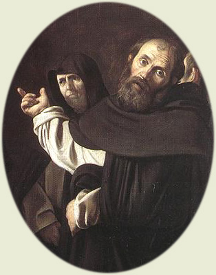

|  | |
|---|---|
| CORPUS THOMISTICUM | BREVE INTRODUZIONE |
Il progetto Corpus Thomisticum vuole mettere a disposizione dei ricercatori un insieme di strumenti per lo studio di Tommaso d'Aquino, accessibile gratuitamente attraverso Internet. È formato da 5 parti:
Il latino è la lingua principale del Corpus Thomisticum, poichè se leggi le opere di Tommaso come sono veramente, certamente conosci la sua lingua.
Il Corpus Thomisticum, pertanto, vuole essere come un grande progetto collettivo: dunque, ogni collaborazione è altamente apprezzata. Si ringrazia per l'invio di nuove referenze bibliografiche, per l'eventuale correzione di quelle già presenti e, particolarmente, per le edizioni migliorate di testi tomistici e di strumenti di ricerca classici e moderni: bonum enim est diffusivum sui.